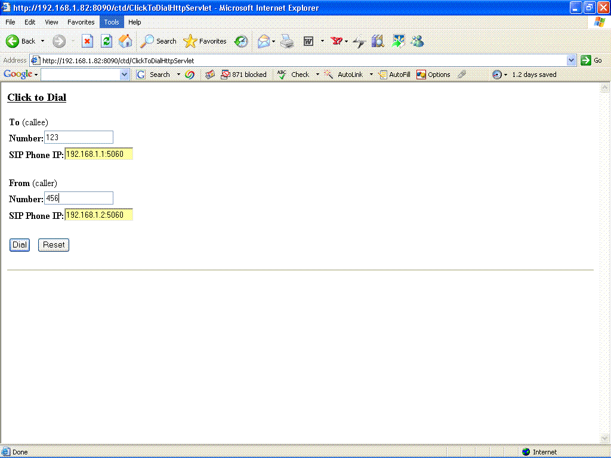

The
Click to Dial application is an example of Converged application i.e.
it uses both the HTTP and SIP servlets. Activate this application after
building, deploying and starting on a running SIP Application Server.
Open a web browser and enter this url in the address bar of the
browser.
http://192.168.1.82:8090/ctd/ClickToDialHttpServlet,
Where 192.168.1.82 is the IP address of Running CAS on
which the Application is activated. 8090 is the HTTP listening port of
that CAS. ctd is the name of the application and
ClickToDialHttpServlet is the name of the starting servlet of the
application.
Following HTML page will be opened:

Enter
the SIP Address of the parties and click the DIal button. The
application will connects the two parties (If SIP agents are running at
these addresses) and thus a session will be established between the two
parties.